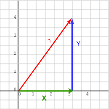

stella v0.3.0 Vector2D
Documentation for Vector 2D.
Link to this section Summary
Functions
Increment one vector by another one
Returns vector length
Create a new two dimensional vector from given values
Decrement one vector by another one
Link to this section Functions
Link to this function
add(curr_vector, given_vector)
Increment one vector by another one
Examples
iex> Vector2D.add(%{x: 2, y: 2}, %{x: 2, y: 2})
%{x: 4, y: 4}
iex> Vector2D.new(-3, 3) |> Vector2D.add(%{x: 3, y: 6})
%{x: 0, y: 9}
Link to this function
length(vector)
Returns vector length
Two dimensional vector length chart

Examples
iex> Vector2D.length(%{x: 2, y: 2})
2.8284271247461903
iex> Vector2D.new(-3, 3) |> Vector2D.length()
4.242640687119285
Link to this function
new(x \\ 0, y \\ 0)
Create a new two dimensional vector from given values
Examples
iex> Vector2D.new(10, 1)
%{x: 10, y: 1}
iex> Vector2D.new()
%{x: 0, y: 0}
Link to this function
sub(curr_vector, given_vector)
Decrement one vector by another one
Examples
iex> Vector2D.sub(%{x: 2, y: 2}, %{x: 2, y: 2})
%{x: 0, y: 0}
iex> Vector2D.new(-3, 3) |> Vector2D.sub(%{x: 3, y: 6})
%{x: -6, y: -3}